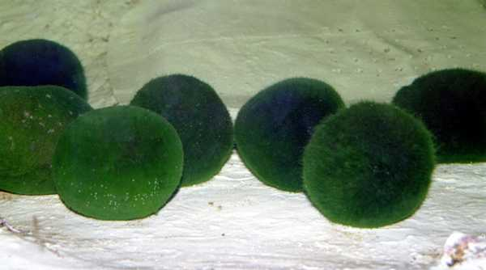

C`est une espèce d`algue qu'on ne retrouve qu`en deux endroits dans le monde . Celles-ci ont plus de 200 ans (Île de Hokkaïdo)
Aegagropila .These have grown for more than 200 years . Very rare in the world .
En japonais - Marimo - In Japanese
